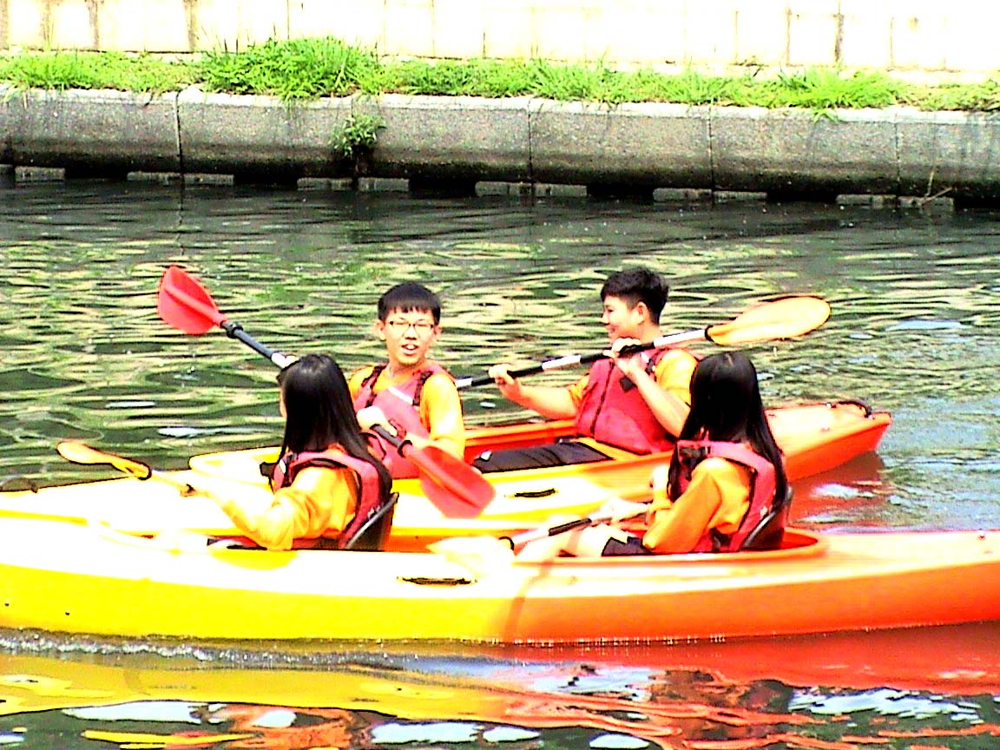
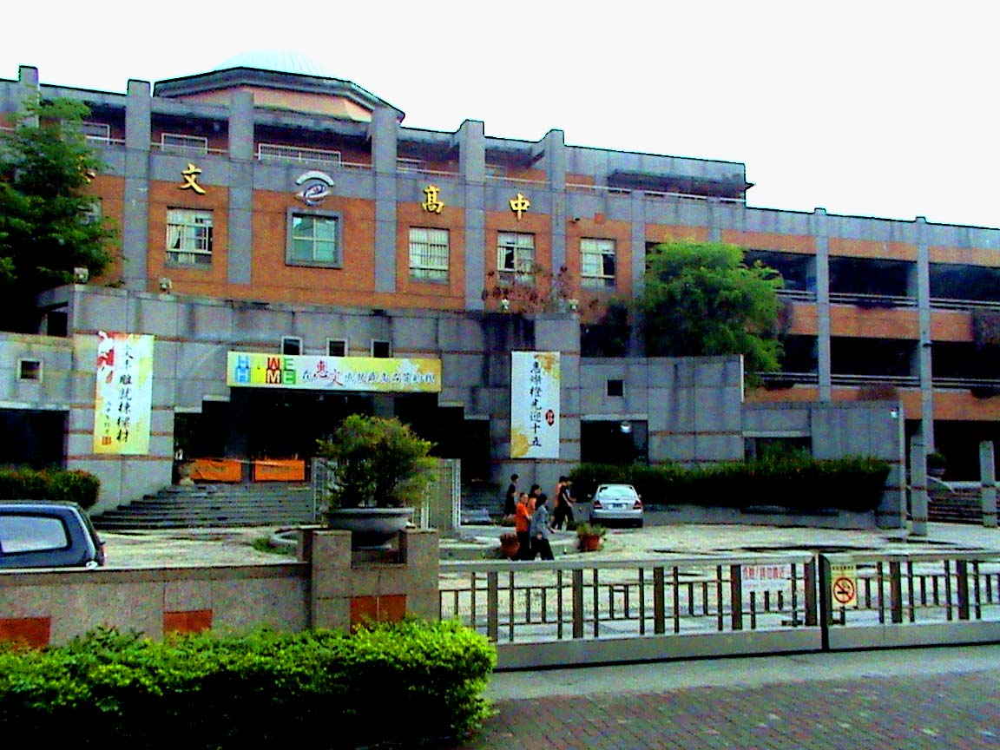
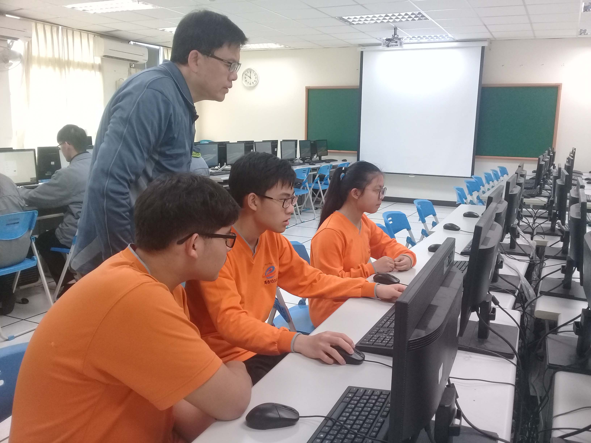
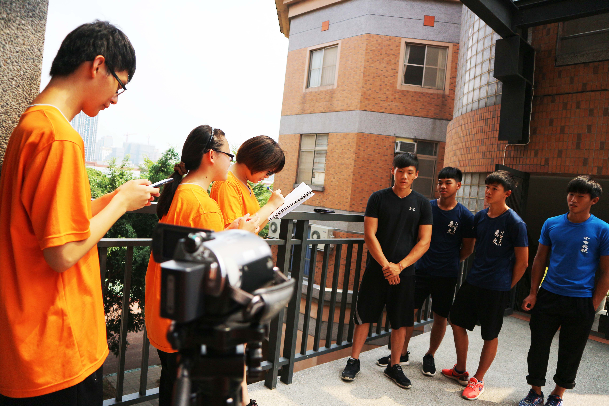

We participate in the Net Expo category :
local environmental issues
Local community description
 Image source:Maps by Google Inc.
Image source:Maps by Google Inc.
Cambridge is located in Wing Lung Lane in Tali District. Wing Lung Lane is a quiet and peaceful community where residents form spontaneous community patrol teams to maintain community cleanliness and safety. Currently, the number of escort teams continues to increase, and the quality of the community is getting better and better as the numbers rise.
Description of the place
 Image source:photographed by ourselves
Image source:photographed by ourselves
From the original lifelessness, to the present freshness, Cambridge has been reborn as a must go and a popular tourist attractions. In the past, the quality of the water here was C and D, which was seriously polluted by industrial and domestic wastewater. Nowadays, there are many improvements in water quality, and the vegetation around the trail is flourishing and has become another symbol of successful reform.
Theme description
Image source:photographed by ourselvesOriginally, the canoe team of our school needed a place to practice, thus advocating the remediation plan of Cambridge. Now Cambridge has been changed from a dirty river into a romantic river side where all citizens could enjoy the beautiful scene and relax themselves. However, the huge change would not happen without the effort and collaboration of the school coaches, community volunteers, city councilmen. It is a memorable story worth our noting down.
Project Overview
Image source:photographed by ourselvesWe first visited school's canoe team to understand the history behind. Then we visited community volunteers, city councilmen and government officials in charge of the river. Last we compile all the data gathered to make a film and a website to keep the public aware of the significance of the river. Most importantly, we hope inspire the public to treasure the river and reduce the pollution they make.
Our internet environment
Image source:photographed by ourselvesMost of the members of the group get connected by ADSL Internet. The computer in the school computer classroom is based on the fiber-optical communication, whose efficiency and quality is very good. These provide us with adequate environment to inquire the data we need and make our website. Thanks to the convenient, we could complete the study more smoothly.
The problems we have overcome
People interview section
To arrange successful interviews is very time-consuming and complex, since we need contact many people from different organizations and have our transportation with limited budget. However, with the assistance from our teachers and the collaboration between members, we overcame all the hardships one by one.
Information gathering section
Before the project, the team members had already done a lot of homework on the theme of Cambridge, so everyone had a certain understanding of Cambridge. After the interview, we understood more about the touching story as well as abundant professional knowledge of water conservancy.
Website making section
In addition to the busy schoolwork, creating a web page with unfamiliar technology is a real challenge. But with the help of each other and long hours of practice, we were able to produce this finished product.
Experience and goals
Image source:photographed by ourselves"How could we proceed the interview?" "What should I do on the web?" At first, we were totally in the dark and needed to learn many things that we had been quite unfamiliar before, However, we regard all the challenges as our milestones toward our maturity whether in communication or in critical thinking.
In the production of this topic, we learned how to politely and naturally talk with the interviewers and arrange everything in an efficient and planned manner. Also, we learned that all the good environment didn't come from nowhere. Instead, it is a result coming from many heroes' effort and sacrifice. Our goal is to make more people know their devotion and willing to do more for our environment after the completion of this website.